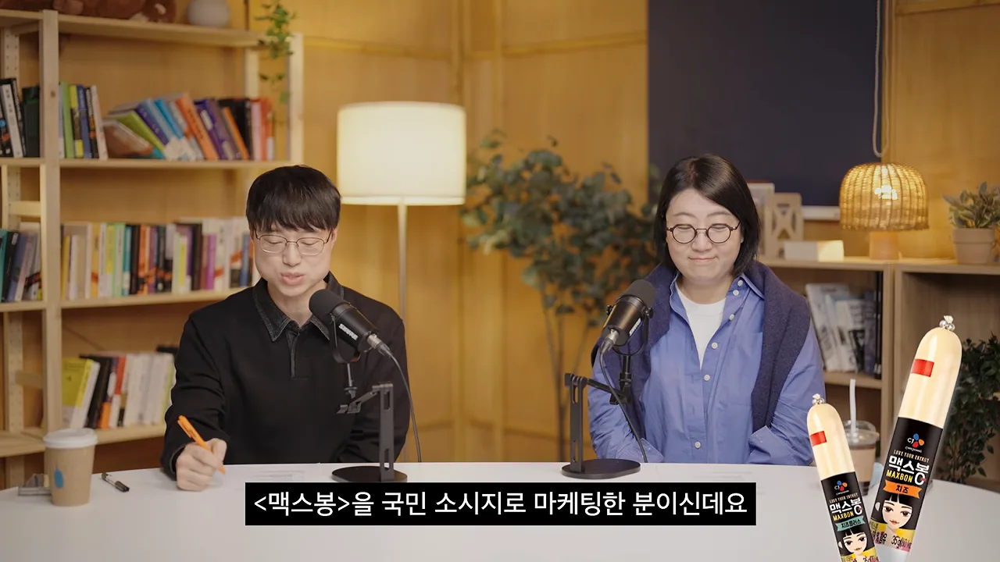
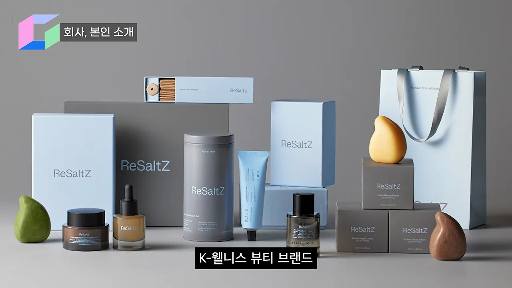
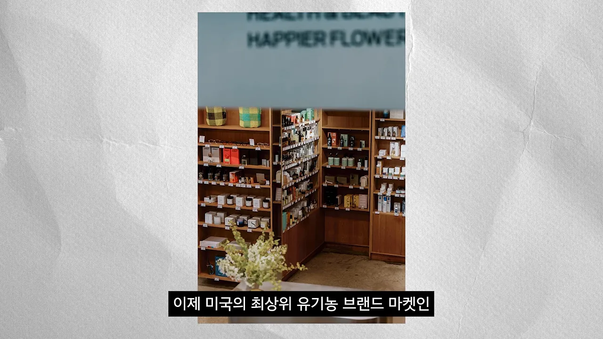
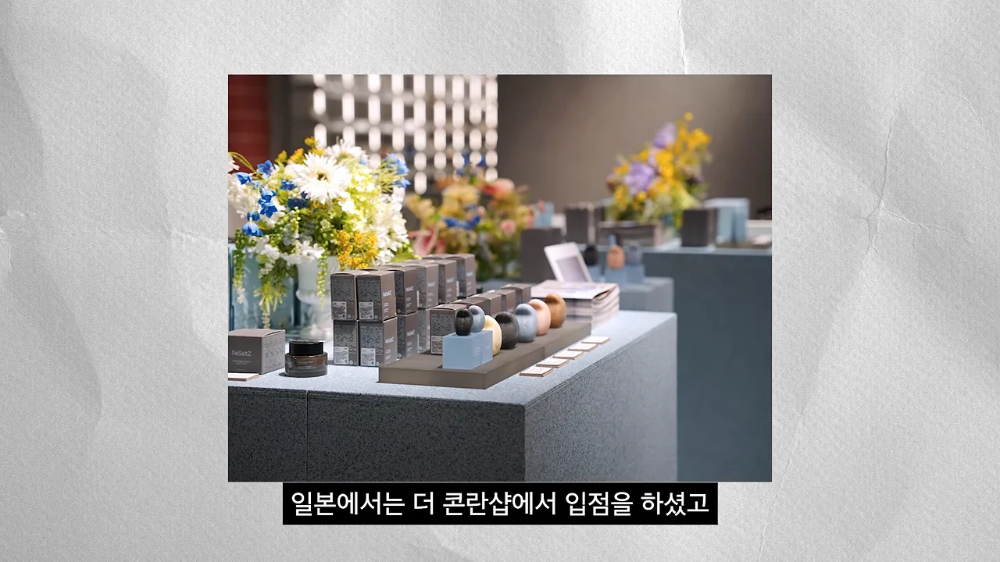
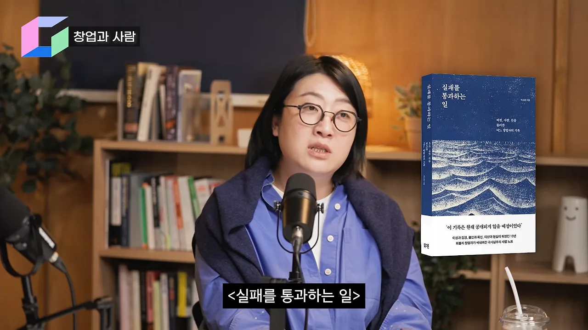

음대생이 브랜딩 회사 대표가 되기까지
이번 게스트는 권윤정 대표예요. 15년 동안 브랜드·뷰티 마케팅을 해 왔고, 진행자는 그를 CJ(Cheil Jedang)의 맥스봉을 '국민 소시지'로 마케팅한 사람으로 소개해요. 아래 장면 오른쪽 아래에 영상이 띄운 맥스봉 두 개가 보여요.

지금 그는 두 회사를 이끌어요. 하나는 브랜딩·마케팅 대행사인 주식회사 히즈예요. CJ, 아모레퍼시픽, 네슬레 같은 대기업이 예전에도 지금도 고객사래요. 다른 하나는 직접 세운 K-웰니스 뷰티 브랜드 리솔츠(ReSaltZ)예요. 한국에 좋은 원료가 있다는 걸 알리고 싶어서 미국과 일본을 겨냥해 만든 프리미엄 브랜드예요. 아래 사진이 리솔츠 제품군이에요. 상자, 병, 튜브마다 ReSaltZ 로고가 찍혀 있고, 색은 연한 하늘색과 회색으로 맞췄어요.

유튜브를 하는 이유는 홍보가 아니래요. 그의 채널에는 회사 연락처도 없어요. 한국에서는 '카더라' 식 바이럴을 마케팅으로 여기고, 브랜딩을 디자인의 한 요소 정도로 보는 경우가 많대요. 그는 이걸 '한국형 마케팅'이라 부르며, 여기에 작은 돌을 던지고 싶었다고 해요.
음대에서 뉴욕을 거쳐 회사까지
이력은 한 줄로 이어지지 않아요. 아래 그림은 그가 이야기한 순서대로 정리한 거예요.
flowchart LR A["음대 입학
1등은 어렵다고 판단"] --> B["공연 기획
남을 빛나게 하는 일"] B --> C["뉴욕 1년 반
리테일 관찰"] C --> D["올드스토리
기업 스토리 제작"] D --> E["프리랜서"] E --> F["주식회사 히즈"] F --> G["리솔츠 출시
2022년쯤"]
- 음대 — 들어가자마자 음악으로 1등은 어렵겠다는 걸 알았대요. 음악은 1등과 나머지의 차이가 크니까, '무대 뒤'에 서기로 했어요. 그는 이걸 메타인지라고 불러요. 대학 때 방송연예, 경영학, 영문학, 미시·거시경제학 수업을 멋있어 보여서 들었고, 학점은 2.2였대요. 그때 배운 재무제표를 지금 쓰고 있어요.
- 공연 기획 — 한 사람이 홍보물 디자인부터 운영까지 다 하는 힘든 업계였어요. 번아웃이 와서 미국으로 떠났어요.
- 뉴욕 — 1년 반 동안 소비자가 어떻게 지갑을 여는지 봤어요. 매장에서 가격 이야기는 없고, 창업자가 나와 할아버지 이야기를 하는데 사람들이 줄을 서고 창업자를 칭찬했대요. 홀푸드 같은 매장이 커 가던 때라, 매주 월스트리트부터 걸어 올라가며 매장을 구경했어요.
- 올드스토리 — 멘토가 운영하던, 기업과 기관의 스토리를 만들어 주는 회사예요. 예를 들어 제품만 팔던 아모레퍼시픽에 헤리티지를 심어 주는 일이었어요. 그는 작가들과 함께 프로젝트를 끝까지 이끄는 역할을 했어요. 외교부 프로젝트도 맡았는데, 외교관들이 칵테일 파티의 스몰토크나 해외 대학 강연을 어려워해서 이를 재미있게 풀어 주는 일이었대요.
- 프리랜서 → 히즈 — 쉬려던 때에도 일이 계속 들어와서 결국 회사가 됐어요.
그는 29살 때까지 월급이 190만 원이었다고 털어놓아요. 창업가가 이런 진실을 말해 줘야 한다고 봐요. 진행자는 AI(Artificial Intelligence) 시대에 정해진 인생 경로가 무너진 지금, 잘하는 것을 알고 호기심을 따라가면 길이 열린다는 교훈으로 이 이야기를 정리해요.
남의 브랜드와 내 브랜드는 어떻게 다를까요
리솔츠는 2022년쯤 출시해 이제 4년 차예요. 남의 브랜드를 키우던 사람이 내 브랜드를 만들어 보니 무엇이 달랐을까요? 권 대표의 답은 "완전히 달라요"예요. 우선 대행사 조직과 인하우스 조직이 많이 다르대요.
대행사는 약속된 일을 잘해야 하고, 고객보다 한발 앞서 제안해야 해요. 그렇다고 모든 걸 손에 쥘 수도, 한 가지 일만 깊게 팔 수도 없어서 프로젝트 매니저에 가깝대요. 무엇보다 대행사는 돈이 많아요. 대행사를 쓸 만큼 큰 광고주의 힘 있는 IP(Intellectual Property)와 광고비를 받아 잘 쓰는 게 역할이었으니까요. 아래 그림의 왼쪽이 대행사, 오른쪽이 리솔츠예요.
관계도 뒤집혔대요. 대행사 대표일 때는 의견을 내는 쪽이었는데, 이제는 "내가 A 해 줬으니 이거 좀 해 주시면 안 돼요?" 하며 여기저기 영업을 해야 해요.
B2B 조직과 B2C 조직
B2C를 하려는 사람에게 특히 중요하다며 짚는 차이예요.
| B2B(Business to Business) 조직 | B2C 조직 | |
|---|---|---|
| 잘해야 하는 것 | 약속을 지키는 것. 납품을 제때 잘하는 것 | 스스로 먹고사는 것 |
| 판단 방식 | 정해진 일을 정해진 대로 | 숫자를 기반으로 스스로 판단 |
| 전략 | 약속한 범위 안에서 | 여럿을 세워도 성과가 나는 쪽으로 모두 몰아요 |
마지막 줄을 그는 '스노우볼링'이라고 표현해요. 성과가 난 곳에 힘을 모아 굴려야 한다는 뜻이에요.
돌아보면 아쉬웠던 것
출시 때는 여기저기서 달라는 요청이 많았고, "이거 한국 사람이 만든 거 맞아?"라는 말도 들었대요. 그런데 이커머스에 대한 인식이 너무 없었다고 돌아봐요. 이커머스는 결국 그로스 마케팅과 이어지는데, 알고는 있었지만 실제로 어떻게 팔지 구체적인 계획이 없었어요.
그는 마케팅에도 A급부터 F급까지 있다고 봐요. F급은 사회적으로 좋아 보이지 않는 방식이라 내 브랜드에서는 하지 말자고 했대요. 하지만 결국 그런 것도 필요하더라는 게 그의 고백이에요. 진행자는 사업이란 구질구질한 일도 해야 하는 것이라고 받아요.
왜 하필 소금이었을까요
왜 하필 소금이었을까요? 이유는 두 갈래에서 왔어요. 하나는 할아버지에 대한 기억, 다른 하나는 자기 몸이에요.
- 할아버지 — 북에서 내려온, 면허 없이 활동하던 한의사였대요. 시험 없이 등록만 하면 되던 시절에 산에 계셔서 면허를 받을 기회를 놓쳤어요. 집에는 책이 가득했고, 그는 진피 같은 한약재를 할아버지와 함께 만들며 자랐어요. 피부병이 났을 때 할아버지가 욕조에 소금을 넣어 준 기억도 있어요.
- 몸 — 일을 너무 많이 해서 해외 출장 때마다 진통제를 대용량으로 사 올 정도였대요. 그러다 병원에서 뇌 쪽 막이 너무 얇아졌다는 말을 들었어요. 수술은 쉽지 않아서 대체 의학과 면역 쪽에서 방법을 찾았어요. 그때 해외 친구가 소금 목욕을 권했어요.
해외에서 천연 소금 입욕제를 사다 써 보니, 책상에 오래 앉아 막혀 있던 순환이 자연스럽게 풀리는 느낌이었대요. 할아버지의 기억과 '클릭'이 된 순간이에요. 그다음은 아래 흐름대로 흘러갔어요.
flowchart LR A["소금 목욕을
직접 체험"] --> B["아이슬란드 소금
수입 구상"] B -->|"수지가 안 맞고
무거워서 항공도 어려움"| C["다시 고민"] C --> D["CJ제일제당 고객사의 조언
한국 소금을 공부해 보세요"] D --> E["미네랄 함량 확인"] E --> F["한국 소금으로
리솔츠"]
처음에는 소금 중 최고 등급이라는 아이슬란드 소금을 수입하려 했어요. 그런데 계산기를 아무리 두드려도 수지가 안 맞았어요. 소금은 무거워서 항공으로 들여오면 비용이 감당되지 않아요.
그때 고객사인 CJ제일제당 사람들이 소금을 많이 연구해 봤다며 한국 소금을 공부해 보라고 권했어요. 공부해 보니 미네랄 함량 같은 게 탁월했대요. 그는 마켓컬리에서 게랑드 소금이 한국 소금보다 여덟 배 비싼데, 품질 차이는 크지 않고 미네랄은 한국 소금이 더 높다고 말해요. 그래서 '사회 정의감'이 다시 움직였고, 리솔츠는 한국 소금으로 가기로 했어요.
작은 브랜드가 해외 고급 매장에 들어간 방법
진행자 소개로는 리솔츠가 한국 브랜드로는 처음으로 미국의 최상위 유기농 마켓 해피어 그로서리에 들어갔어요. 일본에서는 콘란샵과 이세탄 백화점에 들어갔고요. 영상은 이 대목에서 매장 사진 두 장을 띄워요. 첫 장은 위쪽에 'HEALTH & BEAUTY' 간판이 흐릿하게 보이는 나무 선반 매장이에요.

둘째 장은 콘란샵을 말할 때 나와요. 꽃병 옆 회색 진열대에 하늘색·회색 상자들이 놓여 있어요. 앞에서 본 리솔츠 포장과 같은 색이에요.

큰 유통처는 보통 작은 브랜드를 만나 주지도 않아요. 리솔츠는 어떻게 들어갔을까요? 권 대표의 답은 네 가지로 정리돼요.
1. 인스타그램을 고급 시장 눈높이에 맞췄어요
그는 인스타그램을 '평등한 도구'라고 불러요. 외국인도, 지방에 사는 사람도, 회계사도, 대통령도 모두 한 표씩이라는 거예요. 출시 때 인스타그램을 고급 시장 고객이 좋아하는 취향에 딱 맞춰 놓고 "걸려라" 하고 기다렸대요. 그는 사진만 봐도 그 사진이 얼마짜리인지 보인다고 해요. 그걸 본 바이어들이 연락해 왔고, 메일을 주고받으며 입점이 이어졌어요.
2. 처음부터 해외를 노렸어요
신안 소금은 한국에서 품질은 좋아도 고급으로 여겨지지 않아요. 하지만 잘 포장하면 해외에서는 고급으로 인정받을 거라고 봤어요.
3. 자기 이야기를 앞세웠어요
이것도 뉴욕 경험에서 왔대요. 머리를 노랗게 물들이고 영어를 유창하게 해서 주류에 끼려 할 때보다, '검은 머리'의 이야기를 즐겁게 풀 때 미국인들이 훨씬 더 반응했어요. 서양 가정 잔디밭에 놓인 부처상처럼, 그들에게 동양의 것은 신비롭고 '있어 보이는' 동경 포인트라는 거예요. 사람은 다 남의 것이 좋아 보인다는 거죠.
4. 온라인 대신 직접 찾아갔어요
요즘 K-뷰티는 대부분 온라인으로 가요. 아마존에서 퍼포먼스 마케팅을 하고 시딩을 10만 개씩 하면서요. 권 대표는 그건 결국 '총알 싸움', 곧 돈 싸움이라고 봐요. 그래서 자기가 잘하는 쪽을 골랐어요. 직접 바이어를 만나러 가서 얼굴 보고 설득하는 거예요.
| 요즘 K-뷰티의 흔한 길 | 리솔츠가 고른 길 | |
|---|---|---|
| 채널 | 온라인(아마존) | 오프라인 고급 매장 |
| 방법 | 퍼포먼스 마케팅, 대량 시딩 | 인스타그램으로 눈에 띄고 직접 찾아가 설득 |
| 결국 무엇의 싸움인가 | 총알(광고비) | 자기가 잘하는 것 |
정부지원사업과 직접 세운 공장
직접 찾아가려면 비행기값과 숙박비가 들어요. 이 돈을 어떻게 댔느냐는 질문에 권 대표는 웃으며 "지원사업이 있습니다"라고 답해요.
진행자는 보통 지원사업이 기술 창업 위주라 소비재 브랜드에게는 문이 넓지 않다고 짚어요. 그런데 리솔츠는 자기에게 맞는 사업을 잘 찾아냈대요. 진행자가 꼽은 건 농식품 벤처·창업 활성화 지원사업, 글로벌 액셀러레이팅, 올해 받은 A-벤처스예요.
권 대표도 기술 기업이 돈을 훨씬 많이 받는 건 맞다고 인정해요. 그래도 요즘은 리테일도 많이 받는대요. 특히 달러를 벌려는, 곧 수출을 노리는 브랜드에 많이 열려 있고, K-뷰티와 K-푸드에 지원이 많다고 해요.
아무도 안 만들어 줘서 공장을 세웠어요
제조 이야기에서 그는 할 말이 많대요. 한국에는 입욕제 공장이 없었어요. 시중의 소금 입욕제는 소금 공장에서 남은 소금에 인공 색소를 친 수준이었고, 그는 쓰면 안 되는 제품이 너무 많았다고 해요. 큰 화장품 제조사에 의뢰했더니 "아무도 안 쓰고 한국엔 욕조도 없다"며 거절당했어요.
화가 났던 건 러시(Lush) 같은 브랜드는 잘만 팔린다는 점이었어요. 그래서 작게나마 직접 제조 공장을 세웠어요. 아무도 안 만들어 주니 레시피를 스스로 가질 수밖에 없었고, 한방 연구도 이어 가겠다는 뜻이었어요. 아래 그림처럼 이 결정이 지원사업과도 맞물렸어요.
flowchart LR A["한국 소금
(농식품 원료)"] --> D["리솔츠"] B["직접 세운
제조 공장"] --> D C["K-뷰티로
해외 수출"] --> D D --> E["지원사업에 맞는
카테고리가 생김"]
매출 말고 밸류를 봐 달라
지원사업 심사에서 그는 끝까지 "매출을 보지 말고 밸류를 봐 달라"고 외친대요. 농식품부의 고민은 한국 원료가 너무 저평가돼 있다는 거예요. 다른 나라 농산물은 특수 야채처럼 제값을 받는데 우리 것은 브랜딩이 안 돼 있어요. 그래서 그는 이렇게 말해요. 우리 원료가 제값을 받게 하겠다, 미국 최상위 매장 해피어 그로서리에 한국 소금은 나만 있다.
진행자는 지원기관을 '반쯤 고객'이라고 표현해요. 돈을 주는 쪽의 애로사항을 정확히 알고 거기에 답하라는 뜻이에요.
사실 지원 사업 없으면 저는 망했을 거예요.
— 영상 23:24
그래서 멋있게 사업하고 싶다며 지원사업을 외면하는 후배들에게, 도움을 받고 대한민국의 대표가 되라고 많이 말한대요. 지원을 받아 성장한 뒤 세금도 내고 수출도 많이 하면 모두에게 좋은 일이니, 부끄러워할 필요가 없다는 거예요.
인스타그램 시대의 마케팅: 문법과 문장
모든 창업자가 인스타그램을 잘 써야 한다는 건 알지만, 효율은 떨어지고 마케팅 방식도 바뀌는 것 같다는 질문이에요. 권 대표는 요즘 만나는 대표들마다 이 고민을 한다며 "깊은 스트레스가 몰려온다"고 답해요.
사람들은 제품이 아니라 서비스를 사요
그의 진단은 이래요. 물건을 잘 만들면 팔린다는 시대는 끝났어요. 진정성을 갖고 묵묵히 하면 고객이 온다는 것도 끝났어요. 그건 이제 기본이에요. 누가 더 진정성 있는지 고객은 알 수 없으니까요.
그래서 그는 요즘 사람들이 소비하는 건 제품이 아니라 서비스라고 봐요. 테크든 뷰티든 마찬가지예요. 진행자를 예로 들어요. 회계사로서 실력은 당연히 좋겠지만, 시장에서 통하는 건 "근거 있는 얘기를 재미있게 잘한다"는 점이라는 거예요. 알맹이는 당연히 중요하고, 전달도 중요하다는 뜻이에요.
그는 이걸 '비본질이 본질'이라고 불러요. 다만 예전의 부정적인 비본질과는 달라요. 몇 년 전만 해도 성능이 조금 떨어지는 제품을 있어 보이게 포장하고 광고만 잘하면 팔리는 경우가 꽤 있었어요. 요즘은 사람들이 진짜를 알아보는 시간이 아주 짧아졌어요. 제품이 좋은 건 당연하고, 그 위에 삶을 즐겁고 풍성하게 느끼게 해 주는 무언가를 더 팔아야 팔린대요.
모두 같은 영상, 그래서 자기 이야기
그럼 어떻게 마케팅해야 할까요? 그의 답은 "자기 이야기를 해야 한다"예요. 그게 그나마 남은 차별화 포인트래요.
인스타그램 영상은 다 비슷해요. "안녕하세요, 저는 무슨 브랜드 파운더 누구입니다"로 시작하는 식이죠. AI 복제와 알고리즘이 맞물려 모두 똑같아졌고, 그 안에 갇혀 버렸대요. 여기서 튀어 오르려면 특이한 이야기가 있어야 해요. 미국 사회에서 그에게는 '검은 머리'가 그 특이함이었던 것처럼요. 진행자는 오리지널리티를 찾지 못하면 고객에게 소구할 수 없고, 그 마케팅은 실패할 가능성이 높다고 정리해요.
입찰 광고는 메타만 기분 좋아요
메타 광고를 돌리고 바이럴을 까는 데에는 성공 공식 같은 문법이 있고, 지금 모두가 그걸 하고 있어요. 그런데 이건 비딩 방식이에요. 그는 그래서 기분 좋은 건 광고비를 계속 더 받는 실리콘밸리, 곧 메타뿐이라고 말해요. 내 재무제표에서는 광고비가 계속 늘어나니, 이게 과연 지속 가능한지 고민해야 한대요.
문법은 모두가, 문장은 내가
결론은 메타 광고나 인플루언서 시딩을 그만두라는 게 아니에요. 그는 이걸 '학교에 가는 일'로 봐요. 다 해야 하는 기본이고, 그 학교에서 어떻게 공부하고 자랄지는 각자 정해야 한다는 거예요. 진행자는 이걸 '문법과 문장'으로 받아요. 아래 그림의 왼쪽이 누구나 하는 문법, 오른쪽이 내가 써야 하는 문장이에요.
인스타그램 무조건 하셔야 되고요. 창업자 인스타그램 무조건 하셔야 되고 유튜브 할 수 있으면 하세요.
— 영상 27:12
사람, 투명함, 그리고 후배 창업가에게
회사 이름 히즈는 '어떤 사람의 가능성을 발견하고 돕는다'는 뜻이래요. 진행자는 그래서 공통 질문을 던져요. 혼자 사업을 고민하는 시간과 사람을 만나는 시간 중 하나를 고른다면요? 권 대표는 "사람을 만나는 시간에 사업 고민을 같이 한다"고 답해요. 혼자 생각을 정리할 때도 있지만, 새로운 자극과 이야기에서 예상 못 한 답을 찾기도 하니까요.
고객사가 다 친구가 되는 법
그는 고객사 사람들이 다 친구래요. 영업 상대와 어떻게 친구가 될까요? 답은 단순해요.
- 일을 잘해서 그 사람의 승진이나 매출에 도움이 되면 좋은 친구가 돼요.
- 잘하려면 먼저 메타인지가 좋아야 하고, 열심히 해야 해요. 최선을 다해 좋은 성과를 내면 고객은 나를 좋아할 수밖에 없어요.
- 대기업도 최선을 다했는데 안 된 프로젝트는 크게 탓하지 않는대요. 결과만이 아니라 태도와 과정을 봐요.
생각보다 사회는 리즈너블 합니다. 내 마음이 꼬여 있을 뿐입니다.
— 영상 28:49
숨기지 않고 매일 보고하기
최근 사례도 들려줘요. 일본 콘란샵에서 크게 팝업을 열었고, 다음은 다이칸야마에서 연대요. 그런데 제조 쪽이 너무 바빠서 핸드크림 두 종이 펑크가 났어요. 일본은 약속을 안 지키면 기록해 두는 문화라 더 아찔했대요.
그는 마침 뉴욕에 있었는데, 전화로 과정을 매일 솔직하게 알렸어요. 우리가 이렇게 최선을 다하고 있는데 이런 문제가 생겼다, 한국 K-뷰티 붐 때문에 제조가 밀려 있다는 식으로요. 상대가 예측할 수 있게 한 거예요. 그러자 상대도 "어쩔 수 없지" 하고 받아들였고, 다음에 만났을 때 "지난 건 얘기하지 말고 최선을 다하자"는 파트너십이 생겼대요. 갑을 관계로만 보고 목업을 갖다 놓으며 숨겼다면 다 들통났을 거라고 해요. 그는 바이어들이 생각보다 다 이렇다고 덧붙여요.
망해 본 사람의 이야기가 필요해요
창업 초기에 만났으면 좋았을 사람을 묻자, 그는 가장 힘들던 때 마음을 다잡게 한 책을 꺼내요. 박소령 대표의 『실패를 통과하는 일』이에요. 아래 장면 오른쪽에 영상이 띄운 책 표지가 보여요. 짙은 파란 바다 물결 그림 위에 제목이 세로로 적혀 있어요.

그 책을 더 일찍 읽었더라면, 그리고 재무를 아는 사람이 곁에 조금만 더 있었더라면 좋았겠다고 해요. 작은 회사에는 재무를 아는 사람이 드물고, 있어도 대화가 잘 안 된대요. 감도 있는 사람은 숫자를 모르고, 숫자를 아는 사람은 감도를 모르기 쉬우니까요. 사람들은 성공 이야기만 보고 환상을 품은 채 창업에 뛰어드는데, 망한 이야기는 주변에 생각보다 없어요. 그래서 망해 본 사람의 경험이 소중하다고 말해요.
후배 창업가에게
- 다 직접 하세요. 일을 많이 하고, 초기에는 권한 위임 같은 건 없어요.
- 결정은 내가 해요. 작은 회사 대표에게는 "이게 정답이다, 저게 정답이다" 하는 조언이 쏟아져요. 하나하나는 정답일 수 있지만, 다 합치면 정답이 아니게 돼요. 다 듣되 자기 소신으로 길을 정리해야 해요. 망해 본 사람을 만나는 것도 좋대요.
- 자신을 지켜요. 건강을 챙기고, 아무리 힘들어도 맛있는 걸 드시래요. 창업가는 늘 버티는 상태라, 나를 위한 작은 사치가 필요하대요. 다만 감당 가능한 수준이어야 해요. 카드로 포르쉐를 사라는 말은 아니에요.